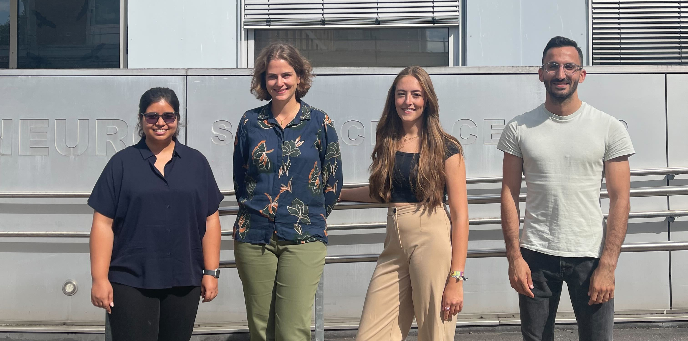

Team
Katharina Imkeller
Research
- Since 2024 W2-Professor for Translational Neurooncology and Quantitative Immunology, Goethe University Frankfurt
- Junior Group Leader in Computational Immunology, MSNZ/FCI/Edinger Institut, Frankfurt
- Postdoc, German Cancer Research Center and European Molecular Biology Laboratory, Heidelberg
- PhD Student, German Cancer Research Center, Heidelberg
- PhD Student, Max-Planck Institute for Infection Biology, Berlin
Education
- Master of Science in Molecular Medicine, Charité University Medicine Berlin
- Bachelor of Science in Biophysics, Humboldt University Berlin
Awards and Scholarships
- Doctoral Thesis Prize, German Society for Biochemistry and Molecular Biology
- EMBO short term fellowship
- Fellowship of the Cusanuswerk
Samira Ortega Iannazzo
Research
- PostDoc, Neurologisches Institut (Edinger Institut), Universitätsklinikum Frankfurt, Germany
- PhD Student, Division of Immunology, Paul-Ehrlich-Institut, Langen, Germany
- MSc Student, Research Group Product “Testing of Immunological Biomedicines”, Paul-Ehrlich-Institut, Langen, Germany
- BSc Student, Project Group “Bioresources”, Sanofi-Fraunhofer IME Cooperartion, Gießen, Germany
Education
- Master of Science in Biology, Technical University Darmstadt, Germany
- Bachelor of Science in Technical Biology, Technical University Darmstadt, Germany

Ahmad Al Ajami
Research
- PhD Student, Neurologisches Institut (Edinger Institut), Universitätsklinikum Frankfurt, Germany
- MSc Student, Group of Statistical Bioinformatics, University of Zürich, Switzerland
- MSc Student, Department of Cancer Immunotherapy Discovery, Roche, Switzerland
Education
- Master of Science in Computational Biology and Bioinformatics, ETH, Switzerland
- Bachelor of Science in Genetics and Bioinformatics, Bahcesehir University, Turkey
- Erasmus Semester, University of Copenhagen, Denmark
- Exchange Student, Syracuse University, USA
Aakanksha Singh
Research
- PhD Student, Neurologisches Institut (Edinger Institut), Universitätsklinikum Frankfurt, Germany
- MSc Student, GATAC- Malaria Group at LPHI, University of Montpelier, France
- MSc Student, Group of Social Evolution, University of Lausanne, Switzerland
Education
- Erasmus Mundus Masters in Evolutionary Biology, University of Groningen, the Netherlands and University of Montpellier, France
- BSc (Hons) Zoology, University of Delhi, India
Lucie Marie Hasse
Research
- Student Assistant at Edinger Institute, University Clinic Frankfurt am Main, Germany (2021-now)
- Student Intern, Robinson Lab, Department of Molecular Life Sciences, University of Zurich, Switzerland
- Student Intern, Hiller Lab, LOEWE Centre for translational biodiversity genomics, Frankfurt am Main, Germany
Education
- Master of Science in Bioinformatics, Goethe University Frankfurt,Germany (2023-now)
- Bachelor of Science in Bioinformatics, Goethe University Frankfurt, Germany (2020-2023)

Devarshi Gandhi
Research
- Student Assistant at Edinger Institute, University Clinic Frankfurt am Main, Germany - Now
- MSc student, Immunohistochemistry Department, The Gujarat Cancer & Research Institute, India
Education
- Master of Science in Molecular Biotechnology, Anhalt University of Applied Sciences, Germany - Now
- Master of Science in Cancer Biology, The Gujarat Cancer & Research Institute, India
- Bachelor of Science in Biotechnology, The Gujarat University, India
Alumni
- Zeina Mahmoud, Student Assistant
- Jens Mayer, MSc student
- Alexander Schleiter, Student Assistant
- Harshit Jindal, MSc Student Intern
Field trips
